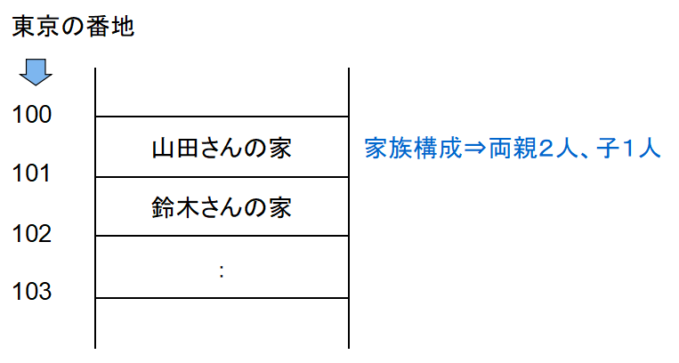
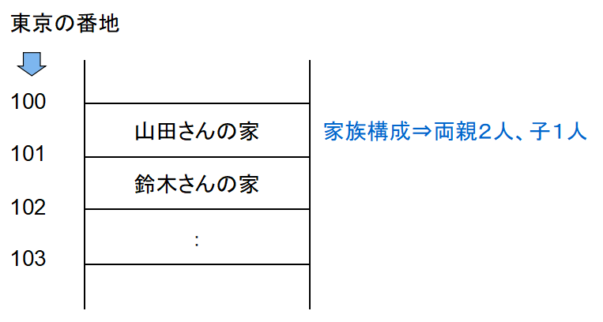

【参照渡し】
はじめに
ここでは当フレームワーク環境で使っているPHPの技術情報を中心に備忘録としてまとめています。
今回対象となる環境は▶マインクラフトの環境のページでご紹介している
今回対象となる環境は▶マインクラフトの環境のページでご紹介している
contents-projectというプロジェクト環境になります。お決まりの書き方
「参照渡し」でよく使われるのは以下のようなパターンではないでしょうか。
引数での「参照渡し」
上記のように関数呼び出しでリターン値以外のデータも取得したい時によく使われる方法だと思います。
他にもクロージャーとのデータのやり取りをする場合にも使われる事がありますが、ここで注目すべきは
PHPマニュアルには以下のように書かれています。
この書き方はC言語でもよく使われる書き方で「アドレス渡し」と呼ばれていますが、PHPは昔から他のプログラミング言語（C言語に限らず）を部分的にリスペクトしているようなところがあるので、これもその一つだと思っています。
PHPとC言語ではコンパイラの処理に違いがあるので、PHP側の処理では「参照渡し」と呼ぶ事にします。
まずは「アドレス渡し」の考え方を理解しておいた方が分かり易いと思いますので以下をご覧ください。
引数での「参照渡し」
function testFunction(&$test)
{
＜ステートメント＞
}
上記のように関数呼び出しでリターン値以外のデータも取得したい時によく使われる方法だと思います。
他にもクロージャーとのデータのやり取りをする場合にも使われる事がありますが、ここで注目すべきは
$testという引数の先頭に&（アンパサンド）が付いているところです。PHPマニュアルには以下のように書かれています。
これは C のポインタとは異なります。ここではその「C言語のポインタ変数とどう異なるのか」に観点をおいて以下で見ていきます。
この書き方はC言語でもよく使われる書き方で「アドレス渡し」と呼ばれていますが、PHPは昔から他のプログラミング言語（C言語に限らず）を部分的にリスペクトしているようなところがあるので、これもその一つだと思っています。
PHPとC言語ではコンパイラの処理に違いがあるので、PHP側の処理では「参照渡し」と呼ぶ事にします。
まずは「アドレス渡し」の考え方を理解しておいた方が分かり易いと思いますので以下をご覧ください。
「アドレス渡し」について
現実世界で例えるならば、仮に東京１００番地という住所に以下のイメージで山田さんの家が存在していたとします。

この「東京１００番地」という場所がメモリ上の配置を表していて、不変的であり唯一無二のものです。（C言語ではメモリ上の配置を任意で決める事ができます）
そして山田さんの家では最初３人が住んでいましたが、そのうち子供が出稼ぎに行くようになって両親の２人暮らしになったり、子供が結婚して孫とともに実家に戻ってくるなりして人数が変化していく変数だと捉える事ができます。
「アドレス渡し」というのはこの唯一無二の番地の部分を渡している事になるので、変数のコピーではなく変数が格納されているメモリ上の実体を常に指し示す事になります。
C言語ではこのアドレス（上記の例では１００という値）をポインタ変数というものに代入してアドレスそのものを変数として扱う事ができますが、PHPではこのポインタ変数というものが存在しません。 PHPマニュアルには以下のように書かれています。

この「東京１００番地」という場所がメモリ上の配置を表していて、不変的であり唯一無二のものです。（C言語ではメモリ上の配置を任意で決める事ができます）
そして山田さんの家では最初３人が住んでいましたが、そのうち子供が出稼ぎに行くようになって両親の２人暮らしになったり、子供が結婚して孫とともに実家に戻ってくるなりして人数が変化していく変数だと捉える事ができます。
「アドレス渡し」というのはこの唯一無二の番地の部分を渡している事になるので、変数のコピーではなく変数が格納されているメモリ上の実体を常に指し示す事になります。
C言語ではこのアドレス（上記の例では１００という値）をポインタ変数というものに代入してアドレスそのものを変数として扱う事ができますが、PHPではこのポインタ変数というものが存在しません。 PHPマニュアルには以下のように書かれています。
リファレンスは、Unix ファイルシステムの ハードリンクのようなものであると考えられます。Unixシステムの事をご存じでない方もおられると思いますので、同じ場所を指し示すラベルのようなものだと考えてもらった方が分かり易いかもしれません。
PHPとC言語との比較
以下ではPHPとC言語をソースで比較しながら見ていきます。
※ソース内の黄色の部分に着目してください。
PHPでの「参照渡し」の利用例
上記をフローで表すと以下のようになります。
※C言語で
※C言語で変数名の前に
上記をフローで表すと以下のようになります。
以上のように、処理の流れはいずれも同じですが変数の扱い方が異なっています。
上記のサンプルソースでは変数の値が「$inside（PHP） = *inside（C言語）」となり同じ値になりますが、C言語で「*(++inside)」と書くとカウントアップされたアドレス（１０１番地）が指し示す先の変数（鈴木さんの家）を参照する事になるため内容が入れ替わります。
PHPでの
そしてラベルのようなもので管理されている関係で
※ソース内の黄色の部分に着目してください。
PHPでの「参照渡し」の利用例
$outside = null;
testFunction($outside);
printf("outside[%d]", $outside);
function testFunction(&$inside)
{
$inside = 1;
return;
}
上記をフローで表すと以下のようになります。
- 1)$outside変数に初期値としてnullを代入
- 2)$outside変数を「参照渡し」でtestFunction関数の引数へ渡す
- 3)testFunction関数内で$outside変数に１がセットされる
- 関数内では
$inside変数が常に$outside変数（山田さんの家）の所在を示していてその$outside変数を参照したり代入したりできます。 - 4)１の値が標準出力へ出力される
void main(void)
{
char outside = null;
testFunction(&outside);
printf("outside[%d]", outside);
return;
}
void testFunction(char *inside)
{
*inside = 1;
return;
}
※C言語で
charというのは１バイトのデータ型です。※C言語で変数名の前に
*（アスタリスク）をつけて宣言するとポインタ変数になります。また、ロジックの中でアスタリスクをつけるとそのアドレスが指し示す先のメモリ内容を参照できます。上記をフローで表すと以下のようになります。
- 1)outside変数に初期値としてnullを代入
- 2)outside変数を「アドレス渡し」でtestFunction関数の引数へ渡す
- 3)testFunction関数内でoutside変数に１がセットされる
- 関数内では
inside変数をポインタ変数として扱っています。そして*（アスタリスク）を付ける事でoutside変数（山田さんの家）の所在を示しているのでそのoutside変数を参照したり代入したりできます。 - 4)１の値が標準出力へ出力される
以上のように、処理の流れはいずれも同じですが変数の扱い方が異なっています。
上記のサンプルソースでは変数の値が「$inside（PHP） = *inside（C言語）」となり同じ値になりますが、C言語で「*(++inside)」と書くとカウントアップされたアドレス（１０１番地）が指し示す先の変数（鈴木さんの家）を参照する事になるため内容が入れ替わります。
PHPでの
$inside変数は関数定義のところでC言語のように&（アンパサンド）を付けて渡されていますが、関数内で値を設定する時は特別な記述をしているわけでもなく、普通に１が代入されています。そしてラベルのようなもので管理されている関係で
testFunction関数内では常に$outside変数を指し示す事になるので、ポインタ変数のように参照先を切り替える事ができません。実装例
それでは▶スタンドの弓矢のソースから抜粋したsocket-managerフレームワーク上での実装を見てみます。
今回対象にしている部分は以下の内容です。
マインクラフトの相対座標の計算処理（app/UnitParameter/ParameterForMinecraft.php内）
この
そしてこのメソッドの呼び出し側で以下のように実装しています。
座標計算メソッドの呼び出し側の処理（app/CommandUnits/CommandForMinecraft.php内）
ここではあらかじめ
XYZの座標の情報を配列等のオブジェクトとして戻り値で返す事もできますが、
※ここで言う「ヨー角」というのはマインクラフトワールド内での水平面の全方位を角度で表したものです。（真北が０度、真南が１８０度になります）
今回対象にしている部分は以下の内容です。
マインクラフトの相対座標の計算処理（app/UnitParameter/ParameterForMinecraft.php内）
/**
* 現在の座標からヨー角を考慮した相対座標を取得
*
* @param float &$p_x X座標
* @param float &$p_y Y座標
* @param float &$p_z Z座標
* @param float $p_yrot ヨー角
* @param float $p_r 半径
*/
public function getRelativeCoordinates(float &$p_x, float &$p_y, float &$p_z, float $p_yrot, float $p_r)
{
＜ステートメント＞
}
この
ParameterForMinecraftクラス内で実装しているgetRelativeCoordinatesというグローバルメソッドがこれに当たります。そしてこのメソッドの呼び出し側で以下のように実装しています。
座標計算メソッドの呼び出し側の処理（app/CommandUnits/CommandForMinecraft.php内）
// 相対座標の取得
$x = $rcv['data']['body']['player']['position']['x'];
$y = $rcv['data']['body']['player']['position']['y'];
$z = $rcv['data']['body']['player']['position']['z'];
$yrot = $rcv['data']['body']['player']['yRot'];
$p_param->getRelativeCoordinates($x, $y, $z, $yrot, 5);
// コマンド送信（座標計算の矢をスポーン）
$cmd_data = $p_param->getCommandDataForStandArrowSpawn($rcv['data']['body']['player']['name'], $x, $y, $z);
$data =
[
'data' => $cmd_data
];
$p_param->setSendStack($data);
ここではあらかじめ
$x、$y、$z変数に退避した座標をgetRelativeCoordinatesメソッドに渡して座標計算しています。XYZの座標の情報を配列等のオブジェクトとして戻り値で返す事もできますが、
getRelativeCoordinatesメソッドを通した後もgetCommandDataForStandArrowSpawnメソッドをコールする時にXYZ座標の変数をそのまま使いたかったので「参照渡し」にしています。※ここで言う「ヨー角」というのはマインクラフトワールド内での水平面の全方位を角度で表したものです。（真北が０度、真南が１８０度になります）
おわりに
PHPマニュアルには色々書かれていますが、要はPHPでは「参照渡し」そのものをC言語のポインタ変数のように操作できないという事を謳っているだけなので、その事さえ押さえておけば特に問題になる事はないでしょう。
「参照渡し」は上記で説明した以外にも使い道はありますが、それはまた別の機会でご紹介したいと思います。
「参照渡し」は上記で説明した以外にも使い道はありますが、それはまた別の機会でご紹介したいと思います。